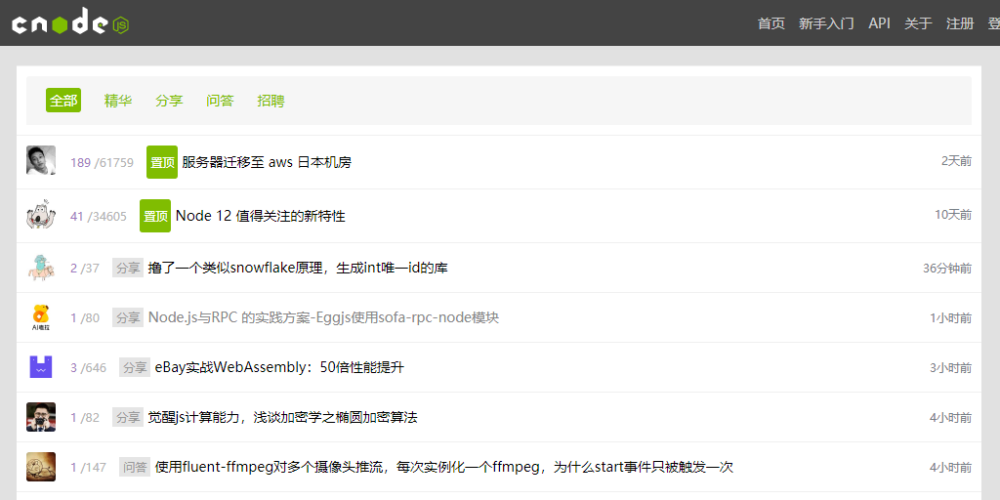

关于我
此前从事搜索引擎优化相关工作，工作中需要制作网页，维护网站，为公司写过一些提高工作效率的Tempermonkey油猴插件， 因此对前端开发产生兴趣。自学前端近一年，对 web 开发有浓厚的学习兴趣，因此想从事专业的 web 开发工作。
个人项目
仿写 CNode 社区

- 项目介绍： 这是我学习 Vue 制作的第一个项目，该项目基于 CNode 社区提供的 API 接口， 实现了对 CNode 社区的仿写。项目使用 vue-cli 脚手架搭建， Axios 库获取数据，以及 vue-router 进行路由切换， 最后使用 webpack 打包工具发布上线。
- 所用技术栈：vue、vue-cli、vue-router、axios、webpack
- 项目预览：https://elitefan0814.github.io/cnodeImitation/dist/index.html
- 源码链接：https://github.com/EliteFan0814/cnodeImitation
思维共享平台
- 项目介绍： 同样使用 Vue-cli 搭建的思维共享平台，具有注册、登陆、编辑发布想法等功能，界面使用 grid 网格布局，引入 Element-UI 组件， 使用 Less 预处理CSS, vue-router 实现路由跳转，对 axios 进行封装以方便调用，并且通过 vuex 实现登录状态的管理，使用导航守卫触发组建内容的更新， 使用路由元信息判断请求所需状态。
- 所用技术栈：less、vue、vue-cli、vue-router、vuex、axios、webpack
- 项目预览：https://elitefan0814.github.io/cnodeImitation/dist/index.html
- 源码链接：https://github.com/EliteFan0814/cnodeImitation